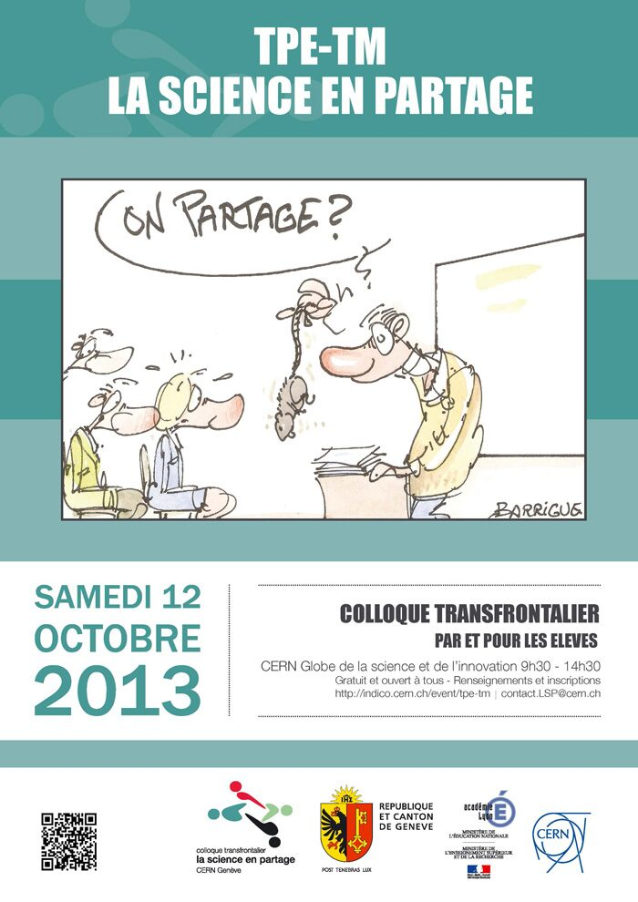

News
CERN 2013
Colloc Transfrontalier
The best TM-TPE projects from Geneva and Pays de Gex are selected and the authors invited to present their findings on stage at an open-to-public event at CERN's Universe of Particles museum
"The awakening of scientific passions is through the discovery of the subjects taught and the knowledge of the world of research. Within the scientific community, one of the essential aspects is the sharing and confrontation of ideas. That is why this cross-border day of meetings between students, based on TPE and TM, is modeled on the scientific symposiums. Welcome !"
Gallery

